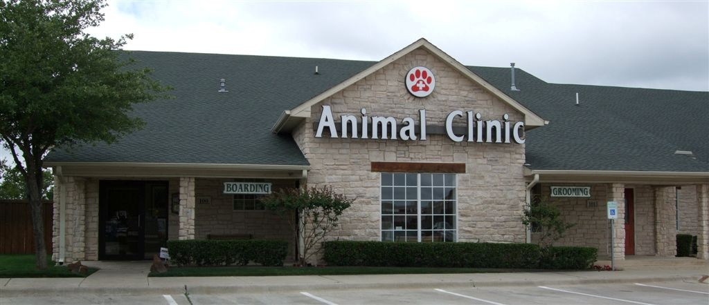

INFORMATION ON PENINSULA
Created on: 18/may/2019 
OWNER: Erika Lopez
BIOGRAPHY: Peninsula Pet Clinic/Spa is locally owned and operated by a local Veterinarian Surgeon.
We consist of a fully equipped clinic that caters to all the medical issues of your pets. We are a
full-service Pet Clinic/Spa. Our services consist of regular check-ups, preventative care, such as
examination, vaccines, and treatment. Diagnostic, surgery, and therapeutic services. To pamper your pet,
in our Spa we provide services such as grooming, bathing/moisturizing services, parasite control, skin
examination, and dental care. Since our priority is protecting your pet’s welfare and health and
because we have so much love for animals, we offer 24 hours on-call services. We do our best to be
as flexible as possible and accommodate schedules according to your needs and time. Schedules that
include nights and weekends. Our regular hours are Monday- Friday 8:00am-5:00pm and weekends
8:00 am- 3pm. We can be contacted through our number 636-5540 to make appointments or for
inquiries. We can also be found on Facebook and Instagram.
Mission
To provide professional services to ensure your pets receive the highest quality of
medication and health care in an affordable manner.
Vision
We strive to ensure the consistency of our high-quality services to become your number
one option for the care of your pets.